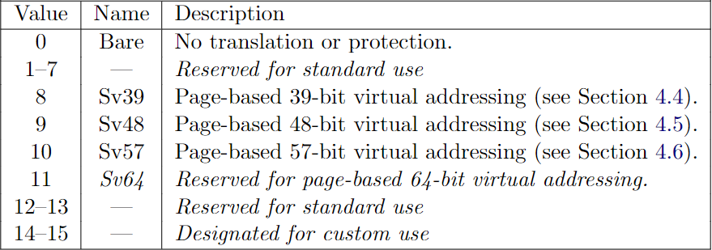
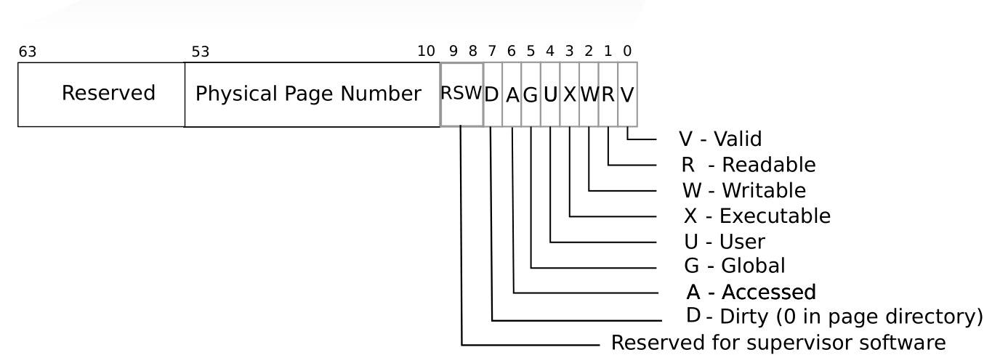
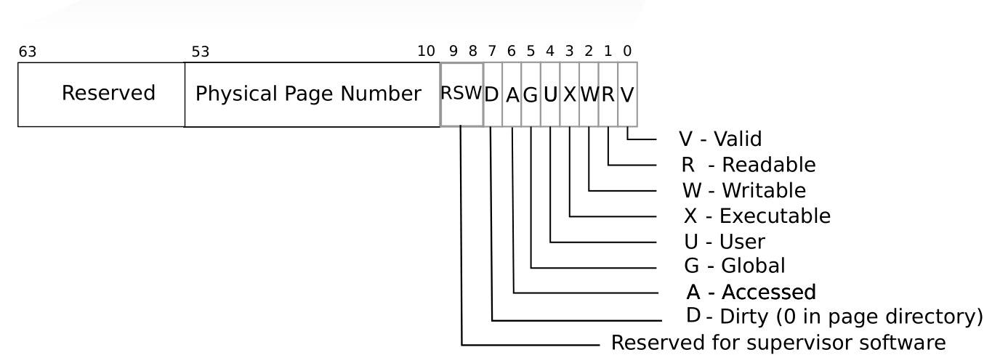

Page Table
Welcome back! This is the last chapter of this tutorial. We will implement a virtual address system by using a popular data structure: page table.
The main reference are the Chapter 3 of the xv6-book, and Section 4.3, 4.4 of RISC-V Privileged.
欢迎回来！本章是这个教程的最后一章。我们将使用一种流行的数据结构————页表，来实现一个虚拟地址系统。
本章主要参考了 xv6-book 的第三章，以及 RISC-V 特权架构文档的第 4.3，4.4 节。
1. SATP
Let's start with the satp control status register. Refer to the Section 4.1.11 of RISC-V Privileged.
The satp register is a 64-bit read/write register, which controls supervisor-mode address translation and protection. This register holds the physical page number (PPN) of the root page table, i.e., its supervisor physical address divided by 4 KiB; an address space identifier (ASID), which facilitates address-translation fences on a per-address-space basis; and the MODE field, which selects the current address-translation scheme.
首先看下 SATP 寄存器。RISC-V 特权架构文档的第 4.1.11 节中说，satp 是一个 64 位的的可读可写寄存器，用于控制 S-mode 下的地址翻译和保护。sapt 存有根页表的 PPN（物理地址页码）。以及一个用于地址同步地址空间 ID，还有一个 MODE 字段，用于选择当前所使用的地址翻译方案。

SATP register: From RISC-V Privileged
The encoding of MODE field is as follows:
MODE 字段的编码如下所示

encoding of MODE field: From RISC-V Privileged
We will implement the Sv39 (MODE = 8) in our emulator. Sv39 means that only the bottom 39 bits of a 64-bit virtual address are used; the top 25 bits are not used.
我们在模拟器中实现的是 Sv39 (MODE = 8)。Sv39 的意思是，64 位的虚拟地址中，只有 39 位被用到，其余的 25 位没有被使用。
2. Page Table and Address Translation
In this Sv39 configuration, a RISC-V page table is logically an array of 2^27 (134,217,728) page table entries (PTEs). Each PTE contains a 44-bit physical page number (PPN) and some flags. The paging hardware translates a virtual address by using the top 27 bits of the 39 bits to index into the page table to find a PTE, and making a 56-bit physical address whose top 44 bits come from the PPN in the PTE and whose bottom 12 bits are copied from the original virtual address.
在 Sv39 中，RISC-V 页表逻辑上是一个 PTE（页表入口）数组，数组大小为 2 的 27 次幂。每个 PTE 由 44 位的 PPN 和一些标志位组成。硬件使用 39 位虚拟地址的前 27 位来索引 PTE。并使用 PTE 的 PPN 字段以及虚拟地址中的 Offset 字段（12位）来构成一个 56 位的物理地址。
 

RISC-V address translation details: From xv6-book
Each PTE contains flag bits that tell the paging hardware how the associated virtual address is allowed to be used. PTE_V indicates whether the PTE is present: if it is not set, a reference to the page causes an exception (i.e. is not allowed). PTE_R controls whether instructions are allowed to read to the page. PTE_W controls whether instructions are allowed to write to the page. PTE_X controls whether the CPU may interpret the content of the page as instructions and execute them. PTE_U controls whether instructions in user mode are allowed to access the page; if PTE_U is not set, the PTE can be used only in supervisor mode.
When all three PTE_X, PTE_W, PTE_R bits are zero, the PTE is a pointer to the next level of the page table; otherwise, it is a leaf PTE.
Any level of PTE may be a leaf PTE, so in addition to 4 KiB pages, Sv39 supports 2 MiB megapages and 1 GiB gigapages. We call them superpages.
To tell the hardware to use a page table, the kernel must write the physical address of the root page-table page into the satp register. We summarize the translation process of a virtual address va (which consists of EXT, L2, L1, L0 and Offset) as follows:
- Read satp.ppn, which points to the root page table pt0. (Each page table contains 512 address.)
- Use va.L2 to index into a PTE pte0 of pt0.
- The pt0.ppn points to the intermediate page table pt1.
- Use va.L1 to index into a PTE pte1 of pt1.
- The pt1.ppn points to the last page table pt2.
- Use va.L0 to index into a PTE pte2 of pt2.
- The pte2 should be a leaf pte.
- Use pte2.ppn concatenate with va.offset to build the final physical address.
Note that all the PTE should be valid; otherwise, a page fault exception should be thrown.
What I show above is a simplified process. Please refer to the Section 4.3.2 Virtual Address Translation Process of RISC-V Privileged for more details.
每个 PTE 包含了一些标志位，用于告诉硬件其关联的虚拟地址的权限。PTE_V 标志 PTE 是否合法，如果其不为 1，则抛出异常。PTE_R 标志该页是否可读，PTE_W 标志该页是否可写；PTE_X 标志该页是否可执行。PTE_U 表示该页是否能被用户模式的指令所访问，如果其不为 1，则该 PTE 只能用于 S 模式。
当 PTE_X，PTE_W，PTE_R 都为零的时候，表示该 PTE 是一个指向下一级页表的指针，否则表示该 PTE 是叶节点 PTE（leaf PTE）。到达叶节点 PTE 之后就可以开始拼接物理地址了。
任意一级的 PTE 都可能是一个叶结点 PTE，因此，SV39 除了支持 4 KiB 的页之外，还支持 2 MiB 和 1 GiB 的超级页（superpage）。然而，xv6 默认没有使用超级页。
为了让硬件启用虚拟地址系统，内核必须将根页表的地址写到 satp 中。以下是我们总结的一个简化版的地址翻译过程。对于虚拟地址 va（根据上图，其由 EXT，L2，L1，L0 以及 Offset 构成），其步骤为：
- 读取 satp.ppn，其指向了根页表 pt0。
- 以 va.L2 作为索引读取 pt0 中相应的 PTE，得到 pte0。
- 读取 pte0.ppn，其指向了中间层页表 pt1，
- 以 va.L1 作为索引读取 pt1 中相应的 PTE，得到 pte1。
- 读取 pte1.ppn，其指向了最后一级页表 pt2。
- 以 va.L0 作为索引读取 pt2 中相应的 PTE，得到 pte2。
- pte2 应该是一个叶节点 PTE。
- 使用 pte2.ppn 拼上 va.offset 得到最终的物理地址。
在上面的过程中，每一个 PTE 都必须是有效的（PTE_V = 1），否则将抛出异常。
对于以上过程，RISC-V 特权架构文档的 4.3.2 节有一个更加通用的描述，涵盖了不同方案（Sv32，Sv39 等）的同时还支持超级页。我们将按这个描述进行实现。
3. Implementation
We defines the translation function as follows:
我们的翻译函数定义如下。
cpu.rs
impl Cpu {
pub fn translate(&mut self, addr: u64, access_type: AccessType) -> Result<u64, Exception> { /*...*/ }
}
Function translate takes a virtual address and return a physical address if succeeds. It also needs to know the access type so it can raise a corresponding page fualt exception when it encounters an error.
函数 translate 将输入的虚拟地址翻译为对应的物理地址。它带一个额外的 AccessType 参数，因为它需要根据不同的访问类型来抛出相应的异常。
There are three types of accessments.
访问类型有三种。如下所示：
cpu.rs
pub enum AccessType {
Instruction,
Load,
Store,
}
We need to update CPU to include some paging facilities.
我们还需要在 CPU 中加入一些用于支持地址翻译的变量。
cpu.rs
pub struct Cpu {
pub regs: [u64; 32],
pub pc: u64,
pub mode: Mode,
pub bus: Bus,
pub csr: Csr,
pub enable_paging: bool,
pub page_table: u64,
}
impl Cpu {
pub fn new(code: Vec<u8>, disk_image: Vec<u8>) -> Self {
let mut regs = [0; 32];
regs[2] = DRAM_END;
let pc = DRAM_BASE;
let bus = Bus::new(code, disk_image);
let csr = Csr::new();
let mode = Machine;
let page_table = 0;
let enable_paging = false;
Self {regs, pc, bus, csr, mode, page_table, enable_paging}
}
}
We will enable paging if satp is set properly. Since satp is a CSR, we will update paging when a CSR instruction is executed. (make a call of the following method before returning from six CSR instructions branch.)
一旦 satp 被设置了特定的模式，我们将启动对应的地址翻译方案。因为 satp 是一个 CSR，我们需要在每一个 CSR 指令执行之后，检查是否应该启动虚拟地址模式。（也就是说，在每个 CSR 指令的执行分支下新增一行代码调用以下的函数。）
cpu.rs
impl Cpu {
fn update_paging(&mut self, csr_addr: usize) {
if csr_addr != SATP { return; }
let satp = self.csr.load(SATP);
self.page_table = (satp & MASK_PPN) * PAGE_SIZE;
let mode = satp >> 60;
self.enable_paging = mode == 8; // Sv39
}
}
The original author implement the translate according to Section 4.3.2 and support superpages. We will keep on this.
Firstly, if paging is not enabled, just return original address.
原作者对 translate 函数是按 RISC-V 文档来写的，我们不作更改。
现在可以来开始实现了。首先，我们检测是否开启了虚拟地址系统。
cpu.rs
impl Cpu {
pub fn translate(&mut self, addr: u64, access_type: AccessType) -> Result<u64, Exception> {
if !self.enable_paging {
return Ok(addr);
}
// ... TO BE CONTINUE ...
}
}
Otherwise, we will translate the address. Since Sv39 has three levels of translation.
如果开启了，我们则开始进行翻译。Sv39 的翻译过程共有三个层次。
cpu.rs
impl Cpu {
pub fn translate(&mut self, addr: u64, access_type: AccessType) -> Result<u64, Exception> {
// ...
let levels = 3;
let vpn = [
(addr >> 12) & 0x1ff, // L0
(addr >> 21) & 0x1ff, // L1
(addr >> 30) & 0x1ff, // L2
];
let mut a = self.page_table;
let mut i: i64 = levels - 1;
let mut pte;
// ... TO BE CONTINUE ...
}
}
Next comes a loop to find the leaf PTE. 我们使用一个循环来查找叶结点 PTE。
cpu.rs
impl Cpu {
pub fn translate(&mut self, addr: u64, access_type: AccessType) -> Result<u64, Exception> {
// ...
loop {
// Let pte be the value of the PTE at address a+va.vpn[i]×PTESIZE. (For Sv39,
// PTESIZE=8.) If accessing pte violates a PMA or PMP check, raise an access
// exception corresponding to the original access type.
pte = self.bus.load(a + vpn[i as usize] << 3, 64)?;
// If pte.v = 0, or if pte.r = 0 and pte.w = 1, stop and raise a page-fault
// exception corresponding to the original access type.
let v = pte & 1;
let r = (pte >> 1) & 1;
let w = (pte >> 2) & 1;
let x = (pte >> 3) & 1;
if v == 0 || (r == 0 && w == 1) {
match access_type {
AccessType::Instruction => return Err(Exception::InstructionPageFault(addr)),
AccessType::Load => return Err(Exception::LoadPageFault(addr)),
AccessType::Store => return Err(Exception::StoreAMOPageFault(addr)),
}
}
// Otherwise, the PTE is valid. If pte.r = 1 or pte.x = 1, go to step 5.
// Otherwise, this PTE is a pointer to the next level of the page table.
// Let i = i − 1. If i < 0, stop and raise a page-fault exception
// corresponding to the original access type. Otherwise,
// let a = pte.ppn × PAGESIZE and go to step 2."
if r == 1 || x == 1 {
break;
}
// go to next level
i -= 1;
let ppn = (pte >> 10) & 0x0fff_ffff_ffff;
a = ppn * PAGE_SIZE;
if i < 0 {
match access_type {
AccessType::Instruction => return Err(Exception::InstructionPageFault(addr)),
AccessType::Load => return Err(Exception::LoadPageFault(addr)),
AccessType::Store => return Err(Exception::StoreAMOPageFault(addr)),
}
}
}
// ... TO BE CONTINUE ...
}
}
Finally, we construct the physical address depending on whether a page is superpage (indicated by the value of i).
找到叶结点 PTE 之后，我们就可以拼出物理地址了。这里我们根据叶结点的层次来判断是否有超级页。超级页的地址拼接写在注释中。该注释来自 RISC-V 文档。
cpu.rs
impl Cpu {
pub fn translate(&mut self, addr: u64, access_type: AccessType) -> Result<u64, Exception> {
// ...
// A leaf PTE has been found.
let ppn = [
(pte >> 10) & 0x1ff,
(pte >> 19) & 0x1ff,
(pte >> 28) & 0x03ff_ffff,
];
// The translation is successful. The translated physical address is given as follows:
// • pa.pgoff = va.pgoff.
// • If i > 0, then this is a superpage translation and pa.ppn[i−1:0] = va.vpn[i−1:0].
// • pa.ppn[LEVELS−1:i] = pte.ppn[LEVELS−1:i]."
let offset = addr & 0xfff;
match i {
0 => {
let ppn = (pte >> 10) & 0x0fff_ffff_ffff;
Ok((ppn << 12) | offset)
}
1 => { // Superpage translation. 2 MiB
Ok((ppn[2] << 30) | (ppn[1] << 21) | (vpn[0] << 12) | offset)
}
2 => { // Superpage translation. 1 GiB
Ok((ppn[2] << 30) | (vpn[1] << 21) | (vpn[0] << 12) | offset)
}
_ => match access_type {
AccessType::Instruction => return Err(Exception::InstructionPageFault(addr)),
AccessType::Load => return Err(Exception::LoadPageFault(addr)),
AccessType::Store => return Err(Exception::StoreAMOPageFault(addr)),
},
}
}
}
The translation is complete right now. To enable paging, we also need to update the fetch, load, store methods of CPU.
现在，翻译函数已经完成了。但我们还要更新下 CPU 的另外三个函数。
impl Cpu {
/// Load a value from a dram.
pub fn load(&mut self, addr: u64, size: u64) -> Result<u64, Exception> {
let p_addr = self.translate(addr, AccessType::Load)?;
self.bus.load(p_addr, size)
}
/// Store a value to a dram.
pub fn store(&mut self, addr: u64, size: u64, value: u64) -> Result<(), Exception> {
let p_addr = self.translate(addr, AccessType::Store)?;
self.bus.store(p_addr, size, value)
}
/// Get an instruction from the dram.
pub fn fetch(&mut self) -> Result<u64, Exception> {
let p_pc = self.translate(self.pc, AccessType::Instruction)?;
match self.bus.load(p_pc, 32) {
Ok(inst) => Ok(inst),
Err(_e) => Err(Exception::InstructionAccessFault(self.pc)),
}
}
}
4. Run xv6 up!
Ideally, we should compile the xv6 kernel and build filesystem image from the xv6 source. I have tried to do this but failed. The emulator encounters an illegal instruction exception. Therefore, I will use the xv6 kernel binary and filesystem image provided by the original author.
Since I omit some modifications when I wrote this tutorial. Your run of cargo run xv6-kernel.bin fs.img may fail. If so, fix them and try again. Refer to my code if necessary.
Finally, you can run cargo build --release to get an optimized version and run the usertests of xv6.
理想情况下，我们应该从 xv6 的源码重新编译出其内核以及文件系统镜像。但我尝试过但失败了，模拟器遇到了一个非法指令错误。因此，我们这次使用的是原作者提供的内核和文件系统镜像。
我在写在这份教程的过程中，一些小的改动我没有提及，因此你尝试运行 cargo run xv6-kernel.bin fs-img 时可能会出错。你可以尝试进行修复，必要时可以参考我的代码。
最后，你可以通过 cargo build --release 来编译一个优化版本，其速度比调试版本快得多。我觉得跟 QEMU 差不多一样快了。可以跑下 usertests 试试。它可以通过大部分测试，我没说全部，因为它卡在了 forkforkfork 那里。
5. Conclusion
You are done!
The emulator is completed and able to run xv6 up. Our emulator is small size. If we ignore the comments and the test code, it only contains 1460 lines of code (including lines which only contain a single }).
恭喜，你做完了！
模拟器已经完成，可以用来跑 xv6 了。我们的模型器很小，如果忽略掉注释以及测试代码，总共才 1460 行（包括那些只有一个 } 的行）。
bus.rs : 45
clint.rs : 33
cpu.rs : 777
csr.rs : 106
dram.rs : 37
exception.rs : 88
interrupt.rs : 23
main.rs : 63
param.rs : 50
plic.rs : 38
uart.rs : 80
virtio.rs : 87
virtqueue.rs : 33
----------------------------
total : 1460
As we have already mentioned, the emulator is not perfect.
- It only supports a hart and we have implemented many instruction as nop.
- The devices (PLIC, CLINT, VirtIO etc) are simplified. Timer interrupt is not supported.
- It does not support network.
- It does not support VGA device.
- ...
There is another open-source, tiny RISC-V emulator named TinyEMU, written by Fabrice Bellard, the original author of QEMU, features as:
- support 32/64/128 bit integer registers
- support 32/64/128 bit floating point instructions
- support compressed instructions
- support VirtIO console, network, block device, input and 9P filesystem
- support graphical display with SDL
- dynamic XLEN change
- written in C
- JS version can run Linux and Windows 2000
It is interesting to rewrite it in Rust!
Additionally, the following courses may be useful:
正如我们之前所说，这个模拟器不是完美的：
- 只支持一个 hart
- IO 设备都是简化过的，连时间中断都没有
- 不支持网络
- 不支持 VGA 显示器。
- 。。。
其实还有一个开源的小型模型器，叫 TinyEMU，由 QEMU 的作者 Fabrice Bellard 所写，其特点包括但不限于：
- 支持 32/64/128 位的整数寄存器
- 支持 32/64/128 位的浮点数指令
- 支持压缩指令集
- 支持 VirtIO 控制台、网络、磁盘、输入设备以及 9P 文件系统（我也不知道是啥）
- 支持图形化界面
- 支持动态调整 XLEN
- 由 C 写成
- 其 JS 版本可以运行 Linux 和 Windows 2000
我想，将之用 Rust 重写会是一件非常有意思的事情！
另外，以下的课程与本教程有点互补：
6. Postscript
I have many thanks to the original author Asami. Writing such a tutorial forces me to read the RISC-V Spec carefully and other relevant documentations many times. I have finished the labs of xv6 formerly and when I return to read the xv6 book again, I recognize many details I used to ignore. By the way, I have also learned something new about Rust, such as cast an address to a type reference and multithread.
I hope this tutorial can bring you with luck. Thanks for your reading.
我非常感谢原作者 Asami 提供了她的教程和代码。为了编写这么一个教程，我仔细读了 RISC-V 标准以及其他相关的文档好几遍。我之前已经学过 xv6 的课程并做了相应的实验，但当我重新去读 xv6 的书时，我注意到了一些以前被我所忽略的细节。这些细节现在看来是如此熟悉和易于理解。我还顺便学习了一些关于 Rust 的新知识，比如说，将一个地址转换为某一个类型的引用，以及多线程。
在这个浮躁且动荡不安的时代，我希望本教程能够带给您好运。感谢您的阅读。